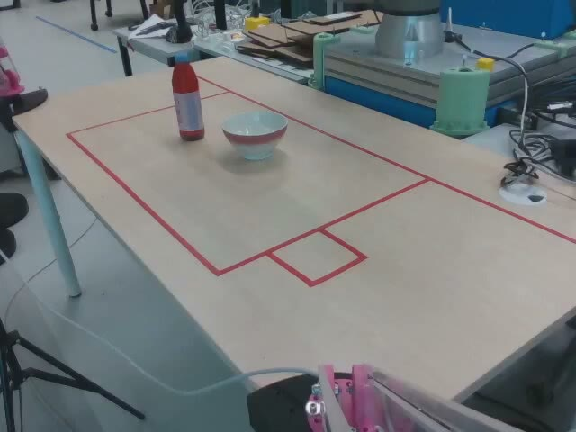
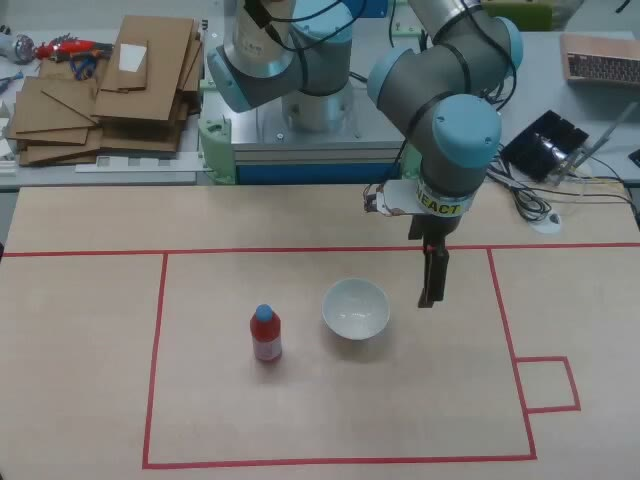
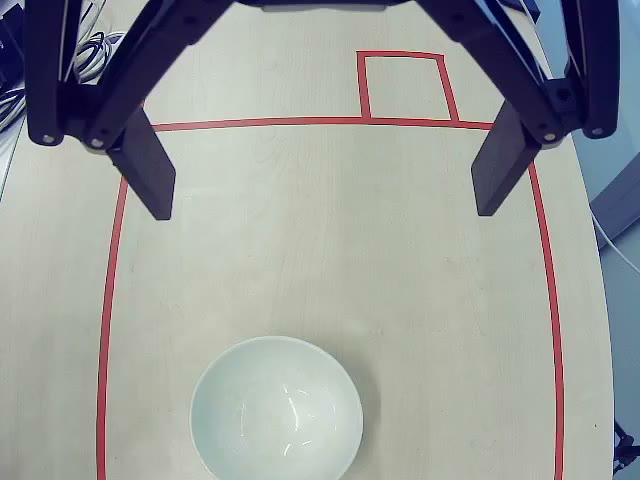
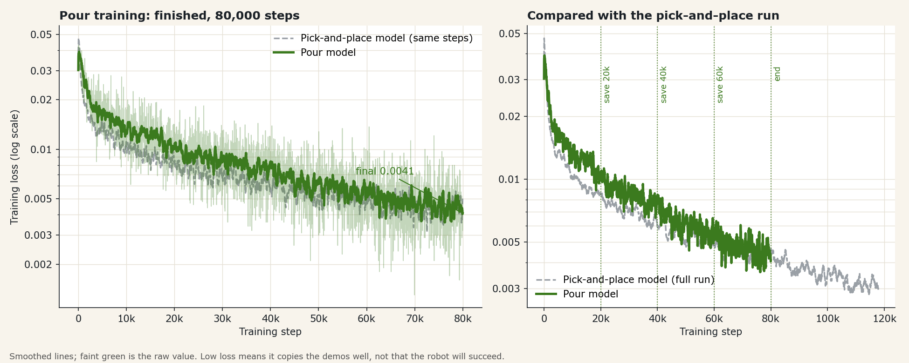

Robot learning from demonstration
A UR16e robot arm that learns kitchen tasks by watching a person do them. We drive the arm with a VR controller, record every move with three cameras, and train vision-language-action models to repeat the task on their own.
Pick up a water bottle anywhere on the table, pour into a bowl at a fixed spot, and put the bottle back in its dock. It is the first step of a simple recipe (lemon water).
Before pouring, the same setup learned to pick up a block placed anywhere on a 5×5 grid.
1 · Show
The operator drives the arm with Meta Quest controllers. A small web server on a laptop turns controller motion into robot commands at 125 Hz.
2 · Record
A ROS 2 stack on a Jetson records three cameras at 30 Hz, robot state at 50 Hz and the gripper at 20 Hz, then checks every episode for gaps.
3 · Check
Demos become a LeRobot dataset at 10 Hz. If any part of an episode is broken, the whole episode is dropped: no patching.
4 · Study
Pi0.5 (OpenPI) and SmolVLA (LeRobot) are fine-tuned on a lab GPU server. Each model sees the three images, the arm position and a text instruction.
5 · Try
The Jetson sends synced camera frames to the model, checks every answer against safety limits, moves the arm, and records the run for review.



| Part | What we use |
|---|---|
| Robot | Universal Robots UR16e with a Robotiq gripper |
| Edge computer | NVIDIA Jetson: cameras, robot link, recorder and gateway |
| Training and model serving | Lab GPU server with 4× RTX A4000 (16 GB) |
| Teleoperation | Meta Quest controllers through a WebXR page |
| Task | Model | Data | Result |
|---|---|---|---|
| Pick up a block | SmolVLA | 153 demos | Reaches and grasps on many runs; no retry after a miss. |
| Pick up a block | Pi0.5 | 123 demos | About 8 of 9 grasps on the real robot once the top camera was back in place. |
| Pour and dock | Pi0.5 | 52 demos (about 1 hour) | Offline it predicts the demonstrator’s moves 2.2× better than standing still, but on the robot it does not grasp yet. More demonstrations are being recorded. |
Camera placement matters: a slightly moved camera made a good model reach for the wrong side. With few demonstrations a model copies the nearest demo instead of finding the object, so coverage of positions matters more than training longer.

Both links open frozen copies of the real dashboards with a few recorded examples. They are not connected to the robot: cameras show “not connected” and buttons do nothing.
The recording dashboard: live checks, the episode library, validation, joint plots, three synced camera videos and a 3D replay of the arm.
OpenThe dashboard that runs a trained model on the robot, and its library of model runs with cameras, graphs and 3D replay on one timeline.
Open